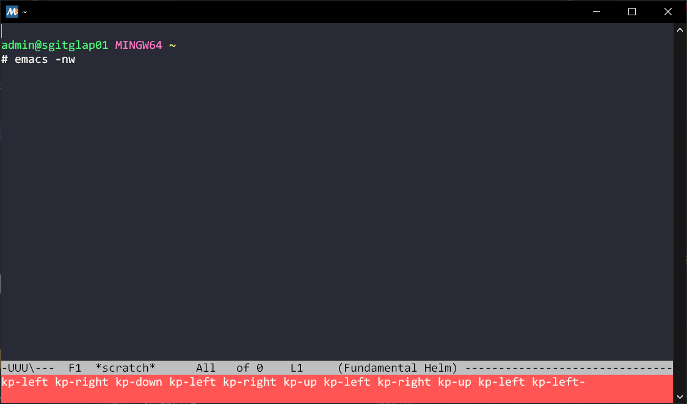

Building Emacs on MSys2 in Windows
Table of Contents
1. Table of Contents
2. Emacs in Windows
I primarily use Emacs in the terminal, where it feels perfectly intuitive.
However, there are times when using Windows becomes unavoidable for various reasons.
Generally, operating systems other than Linux aren't the best platforms for running Emacs.
On Windows, for example, I often find myself having to redo configurations that otherwise would work seamlessly on Linux.
But, the problems with Emacs on Windows don't end there. It's predictably sluggish.
In the GUI, Magit, one of Emacs's standout packages, moves at a pace that can feel terribly slow.
To be fair, neither Magit nor Emacs is to blame. The issue arises from how Windows handles executables like emacs.exe and git.exe.
Despite these issues, I’ve noticed some improvements when using MSys2.
If you run Emacs in a full terminal mode using emacs -nw, the experience is comparable to running it on Linux.
As of August 2024, the default Emacs package available on MSys2 is Emacs 27.2, which works pretty well in the terminal in my opinion.
However, if you're an Emacs enthusiast, you'll likely want to use Emacs 29 to benefit
from its advanced features, such as native compilation through libgccjit bindings, tree-sitter package and more.
In fact, you can actually download Emacs 29 using Pacman with the following command:
# This will give you Emacs 29.4 or later $ pacman -S mingw-w64-x86_64-emacs
But this solution only partially works. You'll need to stick to the GUI mode because the terminal mode will cause the screen to become garbled:
 Figure 1. Emacs is 'running' but only mini-buffer is visible and none of key bindings works.
To use it in terminal mode, you'd either need to stick with the GUI application or use an alternative tool like winpty.
The reason Emacs 27.2 works in the terminal while Emacs 29 doesn't might be because the latter was built using the Windows source tarball instead of the GNU Emacs source. Unfortunately, there isn't a pre-built package that works perfectly on Windows.
That being said, to use Emacs 29 in terminal mode on Windows, you'll likely need to build Emacs from scratch on MSys2.
This post specifically discusses the usage of Emacs within MSys2.
There are other methods people use outside of MSys2.
One option is to download the official binaries for Windows and run Emacs in GUI mode.
Another approach is to use Windows Terminal. I haven't personally used Windows Terminal, so I will leave that method for others to explore.
3. Building Emacs in MSys2 on Windows
There's the official manual in nt/INSTALL.W64 to build Emacs in Windows. We also have this fantastic user manual to introduce the how.
That's it. The lesson I learned is always stick to the the GNU one to build from.